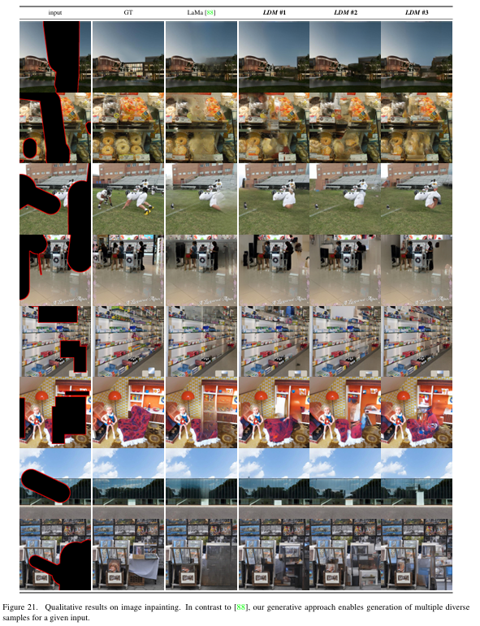
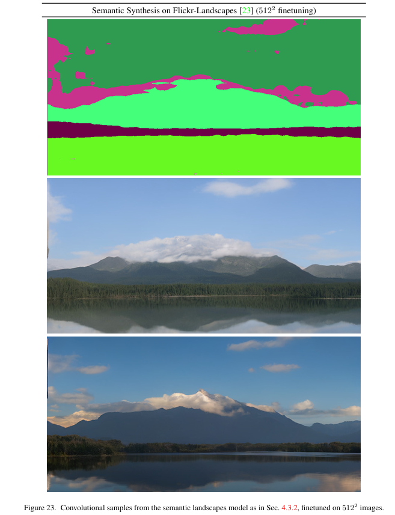
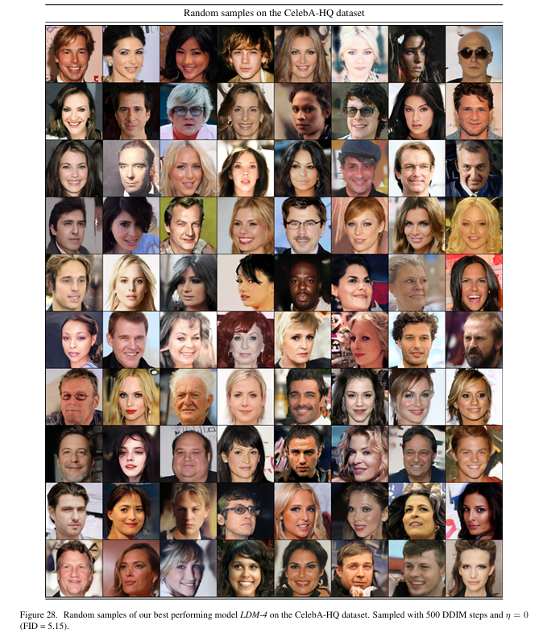

全文翻译
摘要
通过将图像生成过程分解为去噪自编码器的顺序应用，扩散模型（DMs）在图像数据及其他领域取得了最先进的合成结果。此外，其公式允许在无需重新训练的情况下，通过一种引导机制来控制图像生成过程。然而，由于这些模型通常直接在像素空间中运行，训练强大的扩散模型往往需要消耗数百个GPU日的计算资源，并且由于顺序评估，推理成本也很高。为了在有限的计算资源上训练扩散模型，同时保持其质量和灵活性，我们将其应用于强大的预训练自编码器的潜在空间中。与以往的工作不同，在这种表示上训练扩散模型首次在降低复杂度和保留细节之间达到了接近最优的平衡，极大地提高了视觉保真度。通过在模型架构中引入交叉注意力层，我们将扩散模型转变为强大且灵活的生成器，适用于文本或边界框等一般条件输入，并且以卷积方式实现高分辨率合成也成为可能。我们的潜在扩散模型（LDMs）在图像修复和类别条件图像合成方面取得了新的最先进分数，在包括文本到图像合成、无条件图像生成和超分辨率在内的各种任务中表现出极具竞争力的性能，同时与基于像素的扩散模型相比，显著降低了计算需求。
1. 引言
图像合成是计算机视觉领域中近年来发展最为显著的领域之一，但也是计算需求最大的领域之一。特别是复杂自然场景的高分辨率合成，目前主要通过扩展基于似然的模型来实现，自回归（AR）Transformer中可能包含数十亿个参数 。相比之下，生成对抗网络（GANs）虽取得了有前景的成果，但大多局限于可变性相对有限的数据，因为其对抗学习过程难以扩展到对复杂多模态分布的建模。最近，由一系列去噪自编码器构建的扩散模型（DMs）在图像合成及其他领域展现出了令人瞩目的成果，在类别条件图像合成和超分辨率方面达到了最先进水平。此外，与其他类型的生成模型不同，即使是无条件的扩散模型也能轻松应用于图像修复、彩色化或基于笔画的合成等任务。作为基于似然的模型，它们不会像生成对抗网络那样出现模式崩溃和训练不稳定的问题，并且通过大量利用参数共享，能够在不涉及自回归模型中数十亿参数的情况下，对自然图像的高度复杂分布进行建模。
| 图1. 通过较温和的下采样提升可实现质量的上限。由于扩散模型对空间数据具有出色的归纳偏差，我们在潜在空间中无需像相关生成模型那样进行重度空间下采样，而是可以通过合适的自动编码模型大幅降低数据维度，详见第3节。图像来自DIV2K[1]验证集，在512×512像素分辨率下进行评估。我们用f表示空间下采样因子。重建的FID[29]和PSNR是在ImageNet-val[12]上计算得出的；另见表8。 |
1.1 高分辨率图像合成的普及
扩散模型属于基于似然的模型类别，这类模型的模式覆盖特性使其倾向于在对数据中难以察觉的细节进行建模时消耗过多的容量（进而消耗计算资源）。尽管重新加权的变分目标试图通过对初始去噪步骤进行欠采样来解决这个问题，但扩散模型的计算需求仍然很高，因为训练和评估这样的模型需要在高维RGB图像空间中反复进行函数求值（以及梯度计算）。例如，训练最强大的扩散模型通常需要数百个GPU日（如在文献中需要150 - 1000个V100 GPU日），并且在输入空间的噪声版本上进行反复评估也使得推理成本高昂。因此，在单个A100 GPU上生成50,000个样本大约需要5天。这对研究界和普通用户产生了两个影响：首先，训练这样的模型需要大量计算资源，而这些资源仅少数研究人员能够获取，同时还会产生巨大的碳足迹；其次，评估一个已经训练好的模型在时间和内存方面的成本也很高，因为相同的模型架构必须按顺序运行大量步骤（如在文献中为25 - 1000步）。
为了提高这类强大模型的可及性，同时减少其显著的资源消耗，需要一种能够降低训练和采样计算复杂度的方法。因此，在不损害扩散模型性能的前提下降低其计算需求，是提高其可及性的关键。
1.2 迈向潜在空间
我们的方法从分析已经在像素空间中训练好的扩散模型开始：图2展示了一个训练好的模型的率失真权衡。与任何基于似然的模型一样，学习过程大致可以分为两个阶段：第一个是感知压缩阶段，此阶段去除高频细节，但对语义变化的学习较少。在第二个阶段，实际的生成模型学习数据的语义和概念构成（语义压缩）。因此，我们旨在首先找到一个在感知上等效，但计算上更合适的空间，在这个空间中训练用于高分辨率图像合成的扩散模型。
按照惯例，我们将训练分为两个不同的阶段：首先，训练一个自编码器，它提供一个低维（因此高效）的表示空间，这个空间在感知上与数据空间等效。重要的是，与以往的工作不同，我们不需要依赖过度的空间压缩，因为我们在学习到的潜在空间中训练扩散模型，这个潜在空间在空间维度上具有更好的缩放属性。降低的复杂度还使得从潜在空间通过单个网络前向传递就能高效生成图像。我们将由此产生的模型类别称为潜在扩散模型（LDMs）。
这种方法的一个显著优点是，我们只需要训练通用的自编码阶段一次，因此可以将其重新用于多个扩散模型的训练，或者探索可能完全不同的任务。这使得我们能够高效地探索大量用于各种图像到图像和文本到图像任务的扩散模型。对于后者，我们设计了一种架构，将Transformer连接到扩散模型的UNet骨干网络，并实现任意类型的基于令牌的条件机制，详见3.3节。
| 图2. 感知压缩和语义压缩示意图：数字图像的大部分比特信息对应着难以察觉的细节。虽然扩散模型（DMs）可以通过最小化相关损失项来抑制这些语义上无意义的信息，但（训练过程中的）梯度计算和神经网络骨干（训练和推理过程中）仍需在所有像素上进行评估，这导致了多余的计算，以及不必要的高昂优化和推理成本。我们提出潜在扩散模型（LDMs），它是一种有效的生成模型，且有一个单独的轻度压缩阶段，仅消除难以察觉的细节。数据和图像来自文献[30]。 |
总之，我们的工作做出了以下贡献：
- 与纯粹基于Transformer的方法不同，我们的方法在处理高维数据时具有更好的扩展性，因此：（a）在压缩级别上能够提供比以往工作更准确、更详细的重建（见图1）；（b）可以高效地应用于百万像素图像的高分辨率合成。
- 我们在多个任务（无条件图像合成、图像修复、随机超分辨率）和数据集上实现了有竞争力的性能，同时显著降低了计算成本。与基于像素的扩散方法相比，我们还大幅降低了推理成本。
- 我们证明，与以往同时学习编码器/解码器架构和基于分数的先验的工作不同，我们的方法不需要对重建能力和生成能力进行精细的权衡。这确保了极高的重建精度，并且对潜在空间的正则化要求极低。
- 我们发现，对于超分辨率、图像修复和语义合成等密集条件任务，我们的模型可以以卷积方式应用，并生成尺寸约为$1024^2$像素的大型、连贯图像。
- 此外，我们设计了一种基于交叉注意力的通用条件机制，支持多模态训练。我们使用它来训练类别条件、文本到图像和布局到图像的模型。
- 最后，我们在https://github.com/CompVis/latent-diffusion上发布了预训练的潜在扩散模型和自编码模型，这些模型除了用于扩散模型的训练外，还可能在各种任务中重复使用。
2. 相关工作
2.1 图像合成的生成模型
图像的高维特性给生成建模带来了独特的挑战。生成对抗网络（GAN）能够高效地采样生成具有良好感知质量的高分辨率图像，但优化难度较大，且难以捕捉完整的数据分布。相比之下，基于似然的方法强调良好的密度估计，这使得优化过程更加稳定。变分自编码器（VAE）和基于流的模型能够有效地合成高分辨率图像，但样本质量与GAN相比仍有差距。虽然自回归模型（ARM）在密度估计方面表现出色，但计算成本高昂的架构和顺序采样过程将其限制在低分辨率图像生成上。由于基于像素的图像表示包含几乎难以察觉的高频细节，最大似然训练会将过多的能力用于对这些细节进行建模，从而导致训练时间漫长。为了扩展到更高分辨率，一些两阶段方法使用自回归模型对压缩的潜在图像空间而非原始像素进行建模。
最近，扩散概率模型（DM）在密度估计和样本质量方面都取得了最先进的成果。这些模型的生成能力源于其底层神经骨干网络（如UNet）对类图像数据归纳偏差的自然拟合。在训练时使用重新加权的目标函数通常能获得最佳的合成质量。在这种情况下，扩散模型相当于一个有损压缩器，可以在图像质量和压缩能力之间进行权衡。然而，在像素空间中评估和优化这些模型存在推理速度慢和训练成本极高的缺点。虽然前者可以通过先进的采样策略和分层方法部分解决，但对高分辨率图像数据进行训练始终需要计算昂贵的梯度。我们提出的潜在扩散模型（LDMs）解决了这两个缺点，它在低维的压缩潜在空间中工作，使得训练的计算成本更低，推理速度更快，且合成质量几乎没有下降（见图1）。
2.2 两阶段图像合成
为了减轻单个生成方法的缺点，大量研究致力于通过两阶段方法将不同方法的优势结合起来，构建更高效、性能更好的模型。VQ-VAE使用自回归模型在离散化的潜在空间上学习表达性先验。有研究将这种方法扩展到文本到图像生成，通过学习离散化图像和文本表示的联合分布来实现。更普遍的是，有研究使用条件可逆网络在不同领域的潜在空间之间进行通用转换。与VQ-VAE不同，VQGAN在第一阶段采用对抗性和感知性目标，以使自回归Transformer能够处理更大的图像。然而，为了使自回归模型可行训练所需的高压缩率会引入数十亿可训练参数，这限制了此类方法的整体性能，而较低的压缩率又会带来高昂的计算成本。我们的工作避免了这种权衡，因为我们提出的潜在扩散模型（LDMs）由于其卷积骨干网络，在处理高维潜在空间时具有更好的扩展性。因此，我们可以自由选择压缩级别，在学习强大的第一阶段模型的同时，不会给生成扩散模型留下过多的感知压缩任务，同时保证高保真度的重建（见图1）。
虽然存在联合或单独学习编码/解码模型以及基于分数的先验的方法，但前者仍然需要在重建能力和生成能力之间进行困难的权衡，并且性能不如我们的方法（第4节），而后者则专注于高度结构化的图像，如人脸。
3. 方法
为了降低训练用于高分辨率图像合成的扩散模型的计算需求，我们注意到，尽管扩散模型可以通过对相应的损失项进行欠采样来忽略感知上无关的细节，但它们仍然需要在像素空间中进行高成本的函数评估，这导致了大量的计算时间和能源资源消耗。
我们建议通过明确分离压缩学习阶段和生成学习阶段来避免这个缺点（见图2）。为了实现这一点，我们利用一个自动编码模型，该模型学习一个在感知上与图像空间等效，但计算复杂度显著降低的空间。
这种方法有几个优点：第一，通过脱离高维图像空间，我们得到的扩散模型在计算上更加高效，因为采样是在低维空间中进行的。第二，我们利用了扩散模型从其UNet架构继承的归纳偏差，这使得它们对具有空间结构的数据特别有效，因此减轻了像以前方法那样为了降低计算复杂度而采用激进的、有损图像质量的压缩水平的需求。第三，我们得到了通用的压缩模型，其潜在空间可用于训练多个生成模型，也可用于其他下游应用，如单图像CLIP引导的合成。
3.1 感知图像压缩
我们的感知压缩模型基于先前的工作，由一个自动编码器组成，该自动编码器通过结合感知损失和基于补丁的对抗性目标进行训练。这确保了重建图像通过强制局部真实性被限制在图像流形内，避免了仅依赖像素空间损失（如$L_2$或$L_1$目标）所引入的模糊。
更准确地说，给定RGB空间中的图像$x \in \mathbb{R}^{H×W×3}$，编码器$\epsilon$将$x$编码为潜在表示$z = E(x)$，解码器$D$从潜在表示中重建图像，得到$\tilde{x} = D(z) = D(E(x))$，其中$z \in \mathbb{R}^{h×w×c}$。重要的是，编码器将图像下采样因子设为$f = H/h = W/w$，我们研究了不同的下采样因子$f = 2^m$，其中$m \in \mathbb{N}$。
为了避免潜在空间出现过高的方差，我们尝试了两种不同的正则化方法。第一种变体，KL正则化，对学习到的潜在表示施加一个轻微的向标准正态分布的KL惩罚，类似于变分自编码器；而VQ正则化在解码器中使用向量量化层。这个模型可以被解释为一个VQGAN，但量化层被解码器吸收了。因为我们后续的扩散模型被设计为在我们学习到的潜在空间$z = E(x)$的二维结构上工作，所以我们可以使用相对温和的压缩率并实现非常好的重建效果。这与先前的工作形成对比，先前工作依赖于对学习到的空间$z$进行任意的一维排序，以自回归方式对其分布进行建模，从而忽略了$z$的许多固有结构。因此，我们的压缩模型能够更好地保留$x$的细节（见表8）。完整的目标函数和训练细节可以在附录中找到。
3.2 潜在扩散模型
扩散模型是一种概率模型，旨在通过逐步对正态分布变量进行去噪来学习数据分布$p(x)$，这相当于学习长度为$T$的固定马尔可夫链的反向过程。对于图像合成，最成功的模型依赖于$p(x)$的变分下界的重新加权变体，这与去噪分数匹配类似。这些模型可以被解释为一系列等权重的去噪自编码器$\epsilon_{\theta}(x_{t}, t)$：$t = 1 … T$，它们被训练来预测其输入$x_{t}$的去噪版本，其中$x_{t}$是输入$x$的噪声版本。相应的目标函数可以简化为（附录B）：
其中$t$是从$\{1, …, T\}$中均匀采样得到的。
3.2.1 潜在表示的生成建模
通过我们训练好的由$\epsilon$和$D$组成的感知压缩模型，我们现在可以访问一个高效的低维潜在空间，其中高频、难以察觉的细节被抽象掉了。与高维像素空间相比，这个空间更适合基于似然的生成模型，因为它们现在可以：第一，专注于数据中重要的语义信息；第二，在低维、计算效率更高的空间中进行训练。
| 图3. 我们通过拼接或更通用的交叉注意力机制对潜在扩散模型（LDMs）进行条件设定。详见3.3节。 |
与之前在高度压缩的离散潜在空间中依赖基于注意力的自回归Transformer模型的工作不同，我们可以利用我们模型提供的特定于图像的归纳偏差。这包括能够主要由二维卷积层构建底层的UNet，并且通过重新加权边界进一步将目标集中在感知上最相关的信息上，此时目标函数变为：
我们模型的神经骨干$\epsilon_{\theta}(0, t)$由时间条件UNet实现。由于正向过程是固定的，在训练过程中可以从$\epsilon$高效地得到$z_{t}$，并且可以通过$D$将来自$p(z)$的样本解码到图像空间。
3.3 条件机制
与其他类型的生成模型类似，扩散模型原则上能够对$p(z | y)$形式的条件分布进行建模。这可以通过条件去噪自编码器$\epsilon_{\theta}(z_{t}, t, y)$来实现，为通过输入$y$（如文本、语义图或其他图像到图像的转换任务）控制合成过程铺平了道路。
然而，在图像合成的背景下，将扩散模型的生成能力与除类别标签或输入图像的模糊版本之外的其他类型的条件相结合，到目前为止仍是一个有待深入探索的研究领域。
我们通过在扩散模型的UNet骨干网络中加入交叉注意力机制，将其转变为更灵活的条件图像生成器。交叉注意力机制对于学习各种输入模态的基于注意力的模型非常有效。为了对来自各种模态（如语言提示）的$y$进行预处理，我们引入了特定领域的编码器$\tau_{\theta}$，它将$y$投影到中间表示$\tau_{\theta}(y) \in \mathbb{R}^{M ×d_{\tau}}$，然后通过实现$Attention(Q, K, V)=softmax(\frac{QK^{T}}{\sqrt{d}}) \cdot V$的交叉注意力层将其映射到UNet的中间层，其中：
这里，$\varphi_{i}(z_{t}) \in \mathbb{R}^{N ×d_{*}^{i}}$表示实现$\epsilon_{\theta}$的UNet的（展平的）中间表示，$W_{V}^{(i)} \in \mathbb{R}^{d ×d_{e}^{i}}$、$W_{Q}^{(i)} \in \mathbb{R}^{d ×d_{\tau}}$和$W_{K}^{(i)} \in \mathbb{R}^{d ×d_{\tau}}$是可学习的投影矩阵 。可视化描述见图3。
 |
|---|
| 图4. 从在CelebAHQ[39]、FFHQ[41]、LSUN-Churches[102]、LSUN-Bedrooms[102]以及类别条件ImageNet[12]上训练的潜在扩散模型（LDMs）生成的样本，每个样本的分辨率均为256×256。放大查看效果最佳。更多样本见附录。 |
基于图像条件对，我们通过以下公式学习条件潜在扩散模型：
其中$\tau_{\theta}$和$\epsilon_{\theta}$通过公式（3）联合优化。这种条件机制非常灵活，因为$\tau_{\theta}$可以由特定领域的专家进行参数化，例如当$y$是文本提示时，可以使用（未掩码的）Transformer。
4. 实验
潜在扩散模型（LDMs）为基于扩散的各种图像模态的灵活且计算可行的图像合成提供了方法，我们将在以下内容中通过实证展示这一点。不过，首先我们分析与基于像素的扩散模型相比，我们的模型在训练和推理方面的优势。有趣的是，我们发现，在VQ正则化潜在空间中训练的潜在扩散模型有时能实现更好的样本质量，尽管VQ正则化第一阶段模型的重建能力略逊于其连续型对应模型，详见表8。附录D.1展示了第一阶段正则化方案对潜在扩散模型训练的影响，以及它们对分辨率大于$256^2$的泛化能力的视觉比较。在附录E.2中，我们列出了本节所有结果的架构、实现、训练和评估的详细信息。
4.1 感知压缩权衡分析
本节分析不同下采样因子$f \in \{1,2,4,8,16,32\}$（简记为$LDM - f$，其中$LDM - 1$对应基于像素的扩散模型）的潜在扩散模型的性能。为了获得可比的测试环境，我们在本节所有实验中均将计算资源固定为单个NVIDIA A100 GPU，并对所有模型进行相同步数的训练，且模型参数数量相同。
表8展示了本节用于比较的潜在扩散模型的第一阶段模型的超参数和重建性能。图6展示了在ImageNet数据集上，类别条件模型经过200万步训练后，样本质量随训练进度的变化情况。我们发现：第一，$LDM - \{1,2\}$的下采样因子较小，导致训练进度缓慢；第二，$f$值过大时，经过相对较少的训练步数后，保真度就会停滞不前。回顾上述分析（图1和图2），我们将其归因于：第一，将大部分感知压缩任务留给扩散模型；第二，第一阶段压缩过强导致信息丢失，从而限制了可达到的质量。$LDM - \{4 - 16\}$在效率和感知保真度结果之间取得了良好的平衡，这体现在经过200万步训练后，基于像素的扩散模型（$LDM - 1$）和$LDM - 8$之间存在38的显著FID差距。
在图7中，我们比较了在CelebAHQ和ImageNet上训练的模型，使用DDIM采样器在不同去噪步数下的采样速度，并将其与FID分数进行对比。$LDM - \{4 - 8\}$的性能优于感知和概念压缩比例不合适的模型。特别是与基于像素的$LDM - 1$相比，它们在显著提高样本吞吐量的同时，FID分数也低得多。像ImageNet这样的复杂数据集需要较低的压缩率以避免质量下降。总之，$LDM - 4$和$LDM - 8$为实现高质量合成结果提供了最佳条件。
4.2 潜在扩散图像生成
我们在CelebA - HQ、FFHQ、LSUN - Churches和LSUN - Bedrooms上训练$256^2$图像的无条件模型，并使用FID和精度 - 召回率评估：第一，样本质量；第二，它们对数据流形的覆盖程度。表1总结了我们的结果。在CelebA - HQ上，我们报告了新的最先进的FID为5.11，优于以前基于似然的模型以及生成对抗网络。我们也优于LSGM，在LSGM中，潜在扩散模型与第一阶段模型联合训练。相比之下，我们在固定空间中训练扩散模型，避免了在学习潜在空间先验时权衡重建质量的难题，见图1 - 2。
 |
|---|
| 图5. 由我们基于文本到图像合成的模型LDM-8（KL）根据用户自定义文本提示生成的样本，该模型在LAION[78]数据库上进行训练。样本通过200步DDIM采样生成，$\eta$值为1.0。我们采用无条件引导[32]，引导尺度$s$为10.0。 |
 |
|
|---|---|
| 图6. 分析在ImageNet数据集上，具有不同下采样因子f的类别条件潜在扩散模型（LDMs）经过200万步训练的情况。与下采样因子较大的模型（LDM-{4 - 16}）相比，基于像素的LDM - 1需要长得多的训练时间。像LDM - 32那样过度的感知压缩会限制整体样本质量。所有模型均在单个NVIDIA A100上进行训练，且计算资源预算相同。结果通过100步DDIM采样[84]获得，$\kappa = 0$。 | 图7. 比较在CelebA-HQ（左图）和ImageNet（右图）数据集上，具有不同压缩程度的潜在扩散模型（LDMs）。不同标记表示使用DDIM采样的{10, 20, 50, 100, 200}个采样步骤，沿着每条线从右到左排列。虚线表示200步采样时的FID分数，这表明LDM{4 - 8}性能强劲。FID分数是在5000个样本上评估得出的。所有模型均在A100 GPU上进行训练，CelebA数据集上训练50万步，ImageNet数据集上训练200万步。这种训练方式避免了在学习潜在空间先验时权衡重建质量的难题，见图1 - 2。 |
 |
|
|---|---|
| 表1. 无条件图像合成的评估指标。CelebA-HQ的结果转载自文献[43, 63, 100]，FFHQ的结果转载自文献[42, 43]。+：N-s指使用DDIM[84]采样器进行N次采样步骤。∗：在KL正则化潜在空间中训练。更多结果见附录。 | 表2. 在256×256大小的MS-COCO[51]数据集上对文本条件图像合成的评估：使用250步DDIM[84]采样，我们的模型尽管使用的参数显著更少，但性能与最新的扩散模型[59]和自回归模型[26]相当。1/2：数据来自[109]/[26] 。 |
除了LSUN - Bedrooms数据集外，我们在所有数据集上都优于先前基于扩散的方法。在LSUN - Bedrooms数据集上，我们的分数与ADM接近，尽管我们使用的参数只有ADM的一半，训练所需资源也只有其四分之一（见附录E.3.5）。此外，潜在扩散模型在精度和召回率方面始终优于基于生成对抗网络的方法，从而证实了其基于似然的训练目标在覆盖模式上优于对抗方法的优势。在图4中，我们还展示了每个数据集上的定性结果。
| 图8. 使用潜在扩散模型（LDM）在COCO[4]数据集上进行布局到图像的合成，见4.3.1节。定量评估见附录D.3。 |
4.3 条件潜在扩散
4.3.1 潜在扩散模型的Transformer编码器
通过在潜在扩散模型中引入基于交叉注意力的条件机制，我们为扩散模型开启了多种此前未探索的条件模态。对于文本到图像的建模，我们在LAION - 400M上训练了一个参数为14.5亿的KL正则化潜在扩散模型，该模型以语言提示为条件。我们采用BERT分词器，并将$\tau_{\theta}$实现为一个Transformer，以推断出一个潜在代码，该代码通过（多头）交叉注意力映射到UNet中（见3.3节）。这种结合特定领域专家来学习语言表示和视觉合成的方式，产生了一个强大的模型，能够很好地泛化到复杂的、用户定义的文本提示，见图8和图5。为了进行定量分析，我们遵循先前的工作，在MS - COCO验证集上评估文本到图像的生成，我们的模型在该任务上优于强大的自回归模型和基于生成对抗网络的方法，见表2。我们注意到，应用无分类器扩散引导极大地提高了样本质量，使得引导后的$LDM - KL - 8 - G$在文本到图像合成方面与最近的最先进自回归模型和扩散模型相当，同时大幅减少了参数数量。为了进一步分析基于交叉注意力的条件机制的灵活性，我们还训练了基于OpenImages上的语义布局合成图像的模型，并在COCO上进行微调，见图8。定量评估和实现细节见附录D.3。
最后，遵循先前的工作，我们在表3、图4和附录D.4中评估了我们在4.1节中表现最佳的$f \in \{4,8\}$的类别条件ImageNet模型。在这里，我们在显著降低计算需求和参数数量的同时，优于最先进的扩散模型ADM，见表18。
4.3.2 超越$256^2$的卷积采样
通过将空间对齐的条件信息连接到$\epsilon_{\theta}$的输入，潜在扩散模型可以作为高效的通用图像到图像转换模型。我们利用这一点训练用于语义合成、超分辨率（见4.4节）和图像修复（见4.5节）的模型。对于语义合成，我们使用风景图像及其对应的语义图，将下采样后的语义图与$f = 4$模型（VQ正则化，见表8）的潜在图像表示连接起来。我们在$256^2$（从$384^2$裁剪）的输入分辨率上进行训练，但发现我们的模型可以泛化到更大的分辨率，并且在以卷积方式评估时，可以生成高达百万像素级别的图像（见图9）。我们利用这种特性，将4.4节中的超分辨率模型和4.5节中的图像修复模型应用于生成$512$到$1024^2$之间的大型图像。对于此应用，（由潜在空间的尺度引起的）信噪比会显著影响结果。在附录D.1中，我们展示了在（i）由$f = 4$模型（KL正则化，见表8）提供的潜在空间上，以及（ii）通过分量标准差缩放的缩放版本上学习潜在扩散模型时的情况。
| 表3. 在ImageNet[12]上，类别条件ImageNet潜在扩散模型（LDM）与近期用于类别条件图像生成的最先进方法的比较。在附录D.4、表10和附录F中可以找到与更多基线模型的更详细比较。“c.f.g”表示如文献[32]中提出的、具有尺度s的无分类器引导。 |
后者与无分类器引导相结合，也使得文本条件$LDM - KL - 8 - G$能够直接合成大于$256^2$的图像，如图13所示。
| 图9. 在256×256分辨率上训练的潜在扩散模型（LDM），对于诸如风景图像语义合成这类空间条件任务，可以泛化到更大的分辨率（此处为512×1024）。详见4.3.2节。 |
4.4 潜在扩散超分辨率
潜在扩散模型可以通过直接将低分辨率图像作为条件（见3.3节），高效地训练用于超分辨率任务。在第一个实验中，我们遵循SR3的方法，将图像降质固定为4倍下采样的双三次插值，并按照SR3的数据处理流程在ImageNet上进行训练。我们使用在OpenImages上预训练的$f = 4$自动编码模型（VQ正则化，见表8），并将低分辨率条件$y$和输入连接到UNet，即$\tau_{\theta}$为恒等映射。我们的定性和定量结果（见图10和表5）显示出有竞争力的性能，$LDM - SR$在FID上优于SR3，而SR3在IS上表现更好。一个简单的图像回归模型实现了最高的PSNR和SSIM分数；然而，这些指标与人类感知的一致性不佳，并且相比于未完美对齐的高频细节，它们更倾向于模糊的图像。此外，我们进行了一项用户研究，比较基于像素的基线模型和$LDM - SR$。我们遵循SR3的做法，向人类受试者展示一张低分辨率图像，其两侧为两张高分辨率图像，并询问他们的偏好。表4中的结果证实了$LDM - SR$的良好性能。通过使用事后引导机制可以提高PSNR和SSIM，我们通过感知损失实现了这种基于图像的引导，见附录D.6。
| 图10. 在ImageNet验证集上进行的ImageNet 64→256超分辨率任务。LDM-SR在呈现逼真纹理方面具有优势，而SR3能够合成更连贯的精细结构。更多样本和裁剪图见附录。SR3的结果来自文献[72]。 | 表4. 任务1：向受试者展示真实图像和生成图像，并询问他们的偏好。任务2：受试者需要在两张生成图像中做出选择。更多细节见E.3.6节。 |
由于双三次降质过程对于未经过这种预处理的图像泛化性不佳，我们还通过使用更多样化的降质方式训练了一个通用模型$LDM - BSR$。结果见附录D.6.1。
 |
|
|---|---|
| 表5. 在ImageNet验证集上4倍放大的结果（((256 ^{2})) †：FID特征在验证集分割上计算得出，‡：FID特征在训练集分割上计算得出；∗：在NVIDIA A100上进行评估） | 表6. 评估图像修复效率。†：由于GPU设置/批次大小不同，与图7存在偏差，详见附录。 |
4.5 潜在扩散图像修复
图像修复是指填充图像中被遮挡区域的新内容的任务，这可能是因为图像部分损坏，或者是为了替换图像中现有的但不想要的内容。我们评估我们通用的条件图像生成方法与该任务中更专业的最先进方法相比的效果。我们的评估遵循LaMa的协议，LaMa是一种最近的图像修复模型，它引入了一种依赖快速傅里叶卷积的专用架构。在Places上的具体训练和评估协议见附录E.2.2。
我们首先分析第一阶段不同设计选择的影响。特别是，我们比较了$LDM - 1$（即基于像素的条件扩散模型）和$LDM - 4$在KL和VQ正则化下的图像修复效率，以及第一阶段没有任何注意力机制的VQ - $LDM - 4$（见表8），后者在高分辨率解码时减少了GPU内存消耗。为了便于比较，我们固定了所有模型的参数数量。表6报告了分辨率为$256$和$512$时的训练和采样吞吐量、每个epoch的总训练时间（以小时为单位）以及六个epoch后验证分割上的FID分数。总体而言，我们观察到基于像素和基于潜在空间的扩散模型之间至少有2.7倍的速度提升，同时FID分数至少提高了1.6倍。
表7中与其他图像修复方法的比较表明，我们带有注意力机制的模型在FID衡量的整体图像质量上优于文献[88]中的模型。未遮挡图像与我们的样本之间的LPIPS略高于文献[88]中的模型。我们将此归因于文献[88]只生成单一结果，与我们的潜在扩散模型生成的多样结果相比，它更倾向于恢复出平均图像，见图21。此外，在一项用户研究（表4）中，人类受试者更喜欢我们的结果，而非文献[88]中的结果。
 |
|
|---|---|
| 定性结果展示了使用我们经过微调（with fine-tuning，即$w/ft$）的大型图像修复模型进行物体移除的情况。欲了解更多结果，请查看图22。 | 表7. 在来自Places[108]测试图像的30,000个512×512大小的图像裁剪块上对图像修复性能的比较。“40-50%”这一列报告的是在困难示例上计算得出的指标，这些示例中40%至50%的图像区域需要进行修复。†由于文献[88]中使用的原始测试集无法获取，因此是在我们的测试集上重新计算的。 |
基于这些初步结果，我们还在VQ正则化第一阶段的潜在空间中训练了一个更大的扩散模型（表7中的big），且该模型没有注意力机制。遵循文献[15]，这个扩散模型的UNet在其特征层次结构的三个级别上使用注意力层，采用BigGAN的残差块进行上采样和下采样，并且有3.87亿个参数，而非2.15亿个。训练后，我们注意到在分辨率为$256^2$和$512$时生成的样本质量存在差异，我们假设这是由额外的注意力模块引起的。然而，在分辨率为$512$的情况下对模型进行半个epoch的微调，使模型能够适应新的特征统计信息，并在图像修复上创造了新的最先进的FID（表7中的big, w/o attn, w/ $ft$，图11）。
5. 局限性与社会影响
与其他强大的生成模型类似，潜在扩散模型（LDMs）在恶意使用方面存在潜在风险。在文本到图像合成方面，它们可以被用于创建虚假的、令人信服的视觉内容，从而可能被用于传播错误信息、制造深度伪造图像以及侵犯隐私等。我们训练的模型在LAION-400M数据集上进行了训练，该数据集包含来自互联网的大量图像-文本对，其中可能包含有害、偏见或不适当的内容。尽管我们采取了一些措施来减轻这些问题，例如过滤掉已知的有害数据，但仍有可能在训练数据中残留一些不良信息，并且模型可能会学习和再现这些偏见或有害的模式。
此外，我们的模型在计算资源方面仍然具有较高的需求，即使与基于像素的扩散模型相比，LDMs在训练和推理方面已经更加高效。这限制了它们在资源有限的环境中的可访问性，例如在个人设备或资源匮乏的研究机构中。模型的性能也可能受到训练数据的质量和多样性的限制。如果训练数据不能充分代表现实世界的各种场景和图像类型，模型在处理新的、未见过的情况时可能会表现不佳。
从积极的方面来看，LDMs为各种应用提供了强大的工具，如艺术创作、设计、视觉特效以及辅助科学研究等。它们可以帮助艺术家和设计师更快地实现他们的创意，为科学研究提供可视化数据的新方法，例如在医学成像或天文学领域。然而，为了确保这些技术的有益应用，我们需要制定适当的伦理准则和监管措施，以防止其被滥用。这包括对生成内容的明确标识、对模型训练数据的严格审查以及对使用这些模型的人员进行教育，使其了解潜在的风险和责任。
总的来说，虽然潜在扩散模型具有巨大的潜力，但我们必须认识到并解决它们的局限性和潜在的社会影响，以确保它们能够以负责任和有益的方式被使用。
6. 结论
在这项工作中，我们引入了潜在扩散模型（LDMs），这是一类新的基于扩散的生成模型，它通过将计算密集型的学习过程转移到低维的潜在空间中，极大地提高了计算效率。我们的方法结合了感知图像压缩和基于似然的生成建模，从而在保持高质量合成结果的同时，显著减少了训练和推理时间。
我们在多个具有挑战性的数据集上展示了LDMs在无条件和条件图像合成任务中的有效性。在无条件生成方面，我们的模型在CelebA-HQ上取得了新的最先进的FID分数，并且在其他数据集上也优于先前的方法。在条件生成方面，特别是在文本到图像合成中，我们的模型能够生成高质量的图像，与当前最先进的自回归和扩散模型相当，同时使用的参数显著更少。
此外，我们证明了LDMs可以有效地应用于各种图像到图像的转换任务，如超分辨率和图像修复，并且可以泛化到比训练分辨率更高的分辨率。我们的结果强调了通过在感知压缩的潜在空间中学习，利用扩散模型的归纳偏差的潜力。
尽管我们的方法取得了显著进展，但仍然存在一些局限性，如前面章节中讨论的潜在的恶意使用、计算资源需求以及对训练数据的依赖等。未来的工作可以集中在进一步提高模型的效率和可扩展性，减轻潜在的偏见和有害影响，以及探索LDMs在更多领域的应用，如视频合成和3D内容生成等。
总的来说，我们相信潜在扩散模型为基于扩散的生成建模开辟了新的途径，并且有望在许多需要高质量图像合成的应用中发挥重要作用。
附录
| 图12. 来自4.3.2节语义风景模型的卷积样本，该模型在512×512图像上进行了微调。 | 图13. 将无分类器扩散引导与4.3.2节中的卷积采样策略相结合，我们拥有14.5亿参数的文本到图像模型能够渲染尺寸大于其训练时原生256×256分辨率的图像。 |
A. 变更日志
在此，我们列出本文当前版本（https://arxiv.org/abs/2112.10752v2 ）与上一版本（https://arxiv.org/abs/2112.10752v1 ）之间的变更。
- 我们更新了4.3节中关于文本到图像合成的结果，这些结果是通过训练一个新的、参数更多的模型（14.5亿参数）获得的。这还包括与我们工作同时（[59,109]）或之后（[26]）在arXiv上发表的该任务最新竞争方法的新对比。
- 我们更新了4.1节中ImageNet数据集上类别条件合成的结果（另见D.4节），这些结果是通过使用更大的批量重新训练模型得到的。图26和图27中的相应定性结果也进行了更新。更新后的文本到图像模型和类别条件模型现在都使用无分类器扩散引导（classifier-free diffusion guidance）[32]来提高视觉保真度。
- 我们按照Saharia等人[72]建议的方案进行了用户研究，为我们的图像修复（4.5节）和超分辨率模型（4.4节）提供了额外的评估。
- 在主论文中添加了图5，将图18移至附录，将图13添加到附录中。
B. 去噪扩散模型的详细信息
扩散模型可以用信噪比 $SNR(t)=\frac{\alpha_{t}^{2}}{\sigma_{t}^{2}}$ 来描述，该信噪比由序列 $(\alpha_{t})_{t=1}^{T}$ 和 $(\sigma_{t})_{t=1}^{T}$ 组成。从数据样本 $x_{0}$ 开始，这些序列定义了一个正向扩散过程 $q$，如下所示：
对于 $s < t$，该过程具有马尔可夫结构：
其中：
去噪扩散模型是生成模型 $p(x_{0})$，它以类似的马尔可夫结构在时间上逆向还原这个过程，即：
与该模型相关的证据下界（ELBO）在离散时间步上进行分解：
先验 $p(x_{T})$ 通常被选择为标准正态分布，因此ELBO的第一项仅取决于最终的信噪比 $SNR(T)$ 。为了最小化其余项，一种常见的参数化 $p(x_{t - 1}|x_{t})$ 的选择是根据真实后验 $q(x_{t - 1}|x_{t},x_{0})$ 来指定它，但未知的 $x_{0}$ 由基于当前步骤 $x_{t}$ 的估计值 $x_{\theta}(x_{t},t)$ 代替。这就得到了：
其中均值可以表示为：
在这种情况下，ELBO的和简化为：
根据文献[30]，我们使用重参数化：
将重建项表示为去噪目标：
并进行重新加权，使每一项具有相同的权重，从而得到公式(1)。
C. 图像引导机制
扩散模型一个有趣的特性是，无条件模型在测试时可以进行条件设定（参考[15, 82, 85]）。特别是文献[15]提出了一种算法，使用在ImageNet数据集上训练的分类器对数概率$log p_{\Phi}(y | x_{t})$ 来引导无条件模型和条件模型，其中分类器是针对扩散过程中的每个$x_{t}$ 进行训练的。我们直接基于这个公式，引入事后图像引导（post-hoc image-guiding）：
对于具有固定方差的$\epsilon$参数化模型，文献[15]中引入的引导算法为：
这可以理解为用条件分布$log p_{\Phi}(y | z_{t})$ 对 “分数”$\epsilon_{\theta}$ 进行更新校正。
到目前为止，这种方法仅应用于单类分类模型。我们将引导分布$p_{\Phi}(y | T(D(z_{0}(z_{t}))))$ 重新解释为给定目标图像$y$ 时的通用图像到图像转换任务，其中$T$ 可以是适用于当前图像到图像转换任务的任何可微变换，例如恒等变换、下采样操作或类似的变换。
例如，我们可以假设一个方差固定为$\sigma^{2}=1$ 的高斯引导器，这样：
就变成了一个$L_{2}$ 回归目标。
图14展示了这个公式如何作为在$256\times256$ 图像上训练的无条件模型的上采样机制。大小为$256\times256$ 的无条件样本引导$512\times512$ 图像的卷积合成，这里$T$ 是2倍双三次下采样。基于这个思路，我们还尝试了感知相似性引导，用LPIPS[106] 度量替换$L_{2}$ 目标，具体见4.4节。
| 图14. 在风景图像上，无条件模型的卷积采样可能会导致全局结构同质化和不连贯（见第2列）。使用低分辨率图像的$L_{2}$ 引导有助于重建连贯的全局结构 |
D. 补充结果
D.1高分辨率合成中信噪比的选择
如4.3.2节所述，由潜在空间方差（即$Var(z)/\sigma_{t}^{2}$ ）引起的信噪比会显著影响卷积采样的结果。例如，当直接在KL正则化模型的潜在空间中训练LDM时（见表8），该比率非常高，以至于模型在反向去噪过程的早期就分配了大量语义细节。相反，如G节所述，通过潜在变量的逐分量标准差对潜在空间进行重新缩放时，信噪比会降低。我们在图15中展示了潜在空间重新缩放对语义图像合成中卷积采样的影响。需要注意的是，VQ正则化空间的方差接近1，因此无需重新缩放。
| 图15. 说明潜在空间重新缩放对卷积采样的影响，这里是在风景语义图像合成上的应用。见4.3.2节和D.1节 |
D.2所有第一阶段模型的完整列表
我们在表8中提供了在OpenImages数据集上训练的各种自动编码模型的完整列表。
| 表8. 在 OpenImages 数据集上训练、在 ImageNet 验证集上评估的完整自动编码器集合。†表示无注意力机制的自动编码器。 |
D.3布局到图像的合成
在此，我们为4.3.1节中的布局到图像模型提供定量评估和更多样本。我们在COCO数据集[4]和OpenImages数据集[49]上分别训练了一个模型，随后又在COCO数据集上对OpenImages数据集训练的模型进行了微调。表9展示了结果。当遵循近期布局到图像合成研究中的训练和评估协议时，我们的COCO模型达到了当前最先进模型的性能。从OpenImages模型微调后，我们的模型超越了这些研究成果。在FID指标上，我们的OpenImages模型比Jahn等人的研究结果[37]高出近11。在图16中，我们展示了在COCO数据集上微调后的模型的更多样本。
| 表9. 我们的布局到图像模型在COCO [4]和OpenImages [49]数据集上的定量比较。†：在COCO上从头开始训练；∗：从OpenImages进行微调。 |
 |
|---|
| 图16. 更多来自我们用于布局到图像合成的最佳模型LDM-4的样本。该模型在OpenImages数据集上进行训练，并在COCO数据集上进行了微调。这些样本通过100步DDIM采样生成，$\eta = 0$。布局来自COCO验证集。 |
D.4 ImageNet上的类别条件图像合成
表10包含了我们的类别条件LDM在FID和Inception分数（IS）方面的测量结果。LDM-8在参数数量和计算需求显著减少的情况下（见表18），仍取得了极具竞争力的性能。与先前研究类似，我们可以通过在每个噪声尺度上训练一个分类器并使用其引导来进一步提升性能，详见C节。与基于像素的方法不同，这个分类器在潜在空间中训练的成本非常低。更多定性结果见图26和图27。
| 表10. 在ImageNet [12]数据集上，类别条件ImageNet潜在扩散模型（LDM）与近期用于类别条件图像生成的最先进方法的比较。∗：按照[67]中提出的方法，使用给定拒绝率进行分类器拒绝采样。 |
D.5样本质量与V100天数的关系（续4.1节）
在4.1节中评估样本质量随训练进程的变化时，我们报告了FID和IS分数随训练步数的变化情况。另一种评估方式是报告这些指标随V100天数（计算资源使用量）的变化。图17提供了这种分析，其结果在定性上与之前类似。
| 图17. 为完整起见，我们还报告了在固定使用35个V100 GPU天的情况下，ImageNet数据集上类别条件LDM的训练进度。结果是通过100步DDIM采样[84]且$\kappa = 0$ 得到的。出于效率考虑，FID分数是在5000个样本上计算得出的。 |
D.6超分辨率
为了更好地比较LDM和基于像素空间的扩散模型，我们在表5的基础上进行扩展分析，将训练步数相同且参数数量可比的扩散模型与我们的LDM进行对比。对比结果显示在表11的最后两行，结果表明LDM在实现更好性能的同时，采样速度也显著更快。图20给出了定性对比，展示了LDM和基于像素空间的扩散模型的随机样本。
| 表11. ImageNet验证集上4倍上采样的结果（256×256）；†：在验证集划分上计算的FID特征，‡：在训练集划分上计算的FID特征。我们还纳入了一个像素空间基线，其计算量与LDM - 4相同。最后两行与前面的结果相比，进行了额外15轮训练。 |
D.6.1 LDM-BSR：通过多样化图像退化得到的通用超分辨率模型
为了评估我们的LDM-SR的泛化能力，我们将其应用于从类别条件ImageNet模型生成的合成LDM样本（见4.1节）以及从互联网上抓取的图像。有趣的是，我们发现仅使用如文献[72]中所述的双三次下采样作为条件进行训练的LDM-SR，对不符合这种预处理的图像泛化能力较差。因此，为了获得适用于各种真实世界图像（可能包含相机噪声、压缩伪影、模糊和插值的复杂叠加）的超分辨率模型，我们用文献[105]中的退化流程替换了LDM-SR中的双三次下采样操作。BSR退化流程是一种对图像随机应用JPEG压缩噪声、相机传感器噪声、不同的下采样图像插值方法、高斯模糊核和高斯噪声的退化流程。我们发现，使用文献[105]中原始参数的BSR退化流程会导致非常强烈的退化效果。鉴于更温和的退化流程似乎更适合我们的应用，我们调整了BSR退化流程的参数（我们调整后的退化流程可在代码库https://github.com/CompVis/latent-diffusion中找到）。图18通过直接对比LDM-SR和LDM-BSR，展示了这种方法的有效性。LDM-BSR生成的图像比局限于固定预处理的模型生成的图像更清晰，使其适用于实际应用。图19展示了LDM-BSR在LSUN-cows数据集上的更多结果。
| 图18. LDM-BSR能对任意输入进行泛化，可作为通用的上采样器，将类别条件LDM生成的样本（图像见图4）上采样到1024×1024分辨率。相比之下，使用固定的退化过程（见4.4节）会妨碍模型的泛化能力。 |
E. 实现细节和超参数
E.1超参数
我们在表12、表13、表14和表15中概述了所有训练的LDM模型的超参数。
| 表12. 生成表1中数据的无条件LDM的超参数。所有模型均在单个NVIDIA A100上进行训练。 |
| 表13. 4.1节分析中在ImageNet数据集上训练的条件LDM的超参数。所有模型均在单个NVIDIA A100上进行训练。 |
| 表14. 图7分析中在CelebA数据集上训练的无条件LDM的超参数。所有模型均在单个NVIDIA A100上进行训练，均训练500k次迭代。如果收敛较早，我们使用最佳检查点来评估提供的FID分数。 |
| 表15. 4节中条件LDM的超参数。除在八个V100上训练的图像修复模型外，所有模型均在单个NVIDIA A100上进行训练。 |
E.2实现细节
E.2.1条件LDM中$\tau_{\theta}$的实现
在文本到图像和布局到图像合成实验（4.3.1节）中，我们将条件器$\tau_{\theta}$实现为一个无掩码变换器，它处理输入$y$的标记化版本并产生输出$\zeta:=\tau_{\theta}(y)$，其中$\zeta \in \mathbb{R}^{M ×d_{r}}$ 。更具体地说，该变换器由$N$个变换器块组成，这些块包含全局自注意力层、层归一化和逐位置多层感知器（MLP），如下所示：
有了$\zeta$后，通过图3所示的交叉注意力机制将条件映射到UNet中。我们修改了 “简化UNet” [15]架构，用一个浅（无掩码）变换器替换自注意力层，该变换器由$T$个块组成，块中交替包含（i）自注意力层、（ii）逐位置MLP和（iii）交叉注意力层；见表16。需要注意的是，如果没有（ii）和（iii），这个架构就等同于 “简化UNet”。
| 表16. 如E.2.1节所述的变换器块架构，它替换了标准 “简化UNet” 架构[15]中的自注意力层。这里，$n_{h}$表示注意力头的数量，$d$表示每个头的维度。 |
虽然通过额外根据时间步$t$进行条件设定可以提高$\tau_{\theta}$的表示能力，但我们没有选择这种方式，因为它会降低推理速度。我们将对这一修改的更详细分析留作未来的工作。
对于文本到图像模型，我们依赖一个公开可用的标记器[99]。布局到图像模型将边界框的空间位置离散化，并将每个框编码为一个$(l, b, c)$元组，其中$l$表示（离散的）左上角位置，$b$表示右下角位置，类别信息包含在$c$中。
$\tau_{\theta}$的超参数见表17，上述两个任务中UNet的超参数见表13。
| 表17. 4.3节中变换器编码器实验的超参数。 |
需要注意的是，4.1节中描述的类别条件模型也是通过交叉注意力实现的，其中$\tau_{\theta}$是一个可学习的嵌入层，维度为512，将类别$y$映射到$\zeta \in \mathbb{R}^{1 ×512}$ 。
E.2.2图像修复
在4.5节的图像修复实验中，我们使用[88]中的代码生成合成掩码。我们从Places [108]数据集中选取了固定的2k个验证样本和30k个测试样本。在训练过程中，我们使用大小为256×256的随机裁剪，并在大小为512×512的裁剪上进行评估。这遵循了[88]中的训练和测试协议，并重现了他们报告的指标（见表7中的†）。我们在图21中展示了LDM-4带注意力机制的更多定性结果，在图22中展示了LDM-4不带注意力机制、大模型且微调后的定性结果。
E.3评估细节
本节为4节中所述的实验提供了更多评估细节。
E.3.1无条件和类别条件图像合成的定量结果
我们遵循常规做法，基于从我们模型生成的50,000个样本，以及每个展示数据集中的整个训练集，来估计计算FID、精度和召回率分数（参考文献[29,50]）所需的统计数据。计算FID分数时，我们使用torch-fidelity软件包[60]。然而，由于不同的数据处理流程可能会产生不同的结果（参考文献[64]），我们也使用Dhariwal和Nichol（参考文献[15]）提供的脚本对模型进行评估。我们发现，除了ImageNet和LSUN-Bedrooms数据集外，结果大多相符。在这两个数据集上，我们注意到分数略有差异，torch-fidelity计算的结果与Nichol和Dhariwal计算的结果相比，分别为7.76对7.77（在ImageNet数据集上）和2.95对3.0（在LSUN-Bedrooms数据集上）。未来，我们强调统一样本质量评估程序的重要性。精度和召回率同样使用Nichol和Dhariwal提供的脚本进行计算。
E.3.2文本到图像合成
按照参考文献[66]中的评估协议，我们通过将生成的样本与MS-COCO数据集（参考文献[51]）验证集中的30,000个样本进行比较，来计算表2中文本到图像模型的FID和Inception分数。FID和Inception分数使用torch-fidelity进行计算。
E.3.3布局到图像合成
为了评估表9中我们在COCO数据集上的布局到图像模型的样本质量，我们遵循常见做法（参考文献[37, 87, 89]），在COCO分割挑战拆分的2048个未增强示例上计算FID分数。为了获得更好的可比性，我们使用与参考文献[37]中完全相同的样本。对于OpenImages数据集，我们同样遵循其协议，使用验证集中2048个中心裁剪的测试图像。
E.3.4超分辨率
我们按照参考文献[72]中建议的流程，在ImageNet上评估超分辨率模型，即移除短边小于256像素的图像（训练和评估时均如此）。在ImageNet上，低分辨率图像通过带抗锯齿的双三次插值生成。使用torch-fidelity[60]评估FID，并在验证分割上生成样本。对于FID分数，我们还与在训练分割上计算的参考特征进行比较，见表5和表11。
E.3.5效率分析
出于效率考虑，我们基于5,000个样本计算图6、图17和图7中绘制的样本质量指标。因此，这些结果可能与表1和表10中所示的结果有所不同。所有模型的参数数量在表13和表14中给出，且数量相近。我们尽可能提高各个模型的学习率，同时确保它们能够稳定训练。因此，不同运行中的学习率会略有差异，详见表13和表14。
E.3.6用户研究
对于表4中展示的用户研究结果，我们遵循参考文献[72]中的协议，采用二选一的迫选范式来评估人类对两个不同任务的偏好分数。在任务1中，向受试者展示一张低分辨率/掩码图像，其两侧分别是相应的高分辨率/无掩码的真实版本图像和合成图像，合成图像以中间的低分辨率/掩码图像作为条件生成。对于超分辨率任务，向受试者提问：“哪张图像是中间低分辨率图像更好的高质量版本？”；对于图像修复任务，提问：“哪张图像在中间图像的修复区域包含更逼真的内容？”。在任务2中，同样向受试者展示低分辨率/掩码图像，并让他们在两个由竞争方法生成的相应图像中选择偏好的图像。与参考文献[72]中一样，受试者在回答前需观看图像3秒钟。
F. 计算需求
在表18中，我们对使用的计算资源进行了更详细的分析，并将我们在CelebA-HQ、FFHQ、LSUN和ImageNet数据集上性能最佳的模型，与近期最先进的模型进行了比较（使用它们提供的数据，参见[15]）。由于他们报告的计算资源使用量是以V100 GPU天数为单位，而我们所有模型都是在单个NVIDIA A100 GPU上进行训练，因此我们根据A100相对于V100有2.2倍的加速比（参见[74]），将A100 GPU天数转换为V100 GPU天数。为了评估样本质量，我们还报告了相关数据集上的FID分数。我们在显著减少所需计算资源的同时，性能接近StyleGAN2[42]和ADM[15]等最先进的方法。
| 表18. 与最先进的生成模型在训练期间的计算需求和推理吞吐量比较。训练期间的计算量以V100天数为单位，竞争方法的数据除非另有说明，均取自[15]；：在单个NVIDIA A100上测量的吞吐量（样本/秒）；†：数据取自[15]；‡：假设在2500万个训练示例上进行训练；††：相对于ImageNet验证集的R-FID分数* |
G. 自动编码器模型的详细信息
我们按照文献[23]中的方法，以对抗方式训练所有自动编码器模型。具体来说，通过优化基于补丁的判别器$D_{\psi}$，使其能够区分原始图像和重建图像$D(E(x))$。为避免潜在空间出现任意缩放的情况，我们对潜在变量$z$进行正则化，使其均值为零，并通过引入正则化损失项$L_{reg}$来获得较小的方差。
我们研究了两种不同的正则化方法：（i）在$q_{E}(z | x)=\mathcal{N}(z ; E_{\mu}, E_{\sigma^{2}})$和标准正态分布$\mathcal{N}(z ; 0,1)$之间添加一个低权重的Kullback-Leibler项，这与标准变分自编码器[46,69]的做法类似；（ii）通过学习一个包含$|Z|$个不同范例的码本，使用向量量化层对潜在空间进行正则化[96]。
为了获得高保真的重建结果，在这两种情况下我们都仅使用了非常小的正则化。具体而言，我们要么将KL项乘以一个约为$10^{-6}$的因子，要么选择较高的码本维度$|Z|$。
训练自动编码模型$(E, D)$的完整目标函数为：
在潜在空间中训练扩散模型
需要注意的是，在学习$p(z)$或$p(z | y)$（见4.3节）时，对于在学习到的潜在空间中训练扩散模型，我们再次区分两种情况：（i）对于KL正则化的潜在空间，我们采样$z = E_{\mu}(x)+E_{\sigma}(x) \cdot \varepsilon := E(x)$，其中$\varepsilon \sim \mathcal{N}(0,1)$ 。在对潜在变量进行重新缩放时，我们从数据的第一批样本中估计逐分量方差：
其中$\hat{\mu}=\frac{1}{bchw}\sum_{b,c,h,w}z^{b,c,h,w}$ 。对$\varepsilon$的输出进行缩放，使得重新缩放后的潜在变量具有单位标准差，即$z \leftarrow \frac{z}{\hat{\sigma}}=\frac{E(x)}{\hat{\sigma}}$ 。（ii）对于VQ正则化的潜在空间，我们在量化层之前提取$z$，并将量化操作整合到解码器中，即它可以被解释为解码器的第一层。
H. 额外定性结果
最后，我们为风景模型（图12、23、24和25）、类别条件ImageNet模型（图26 - 27）以及CelebA - HQ、FFHQ和LSUN数据集的无条件模型（图28 - 31）提供了额外的定性结果。与4.5节中的图像修复模型类似，我们还对4.3.2节中的语义风景模型直接在$512^2$图像上进行了微调，并在图12和图23中展示了定性结果。对于那些在相对较小数据集上训练的模型，我们在图32 - 34中展示了模型样本在VGG [79]特征空间中的最近邻。
| 图19. LDM-BSR可作为通用上采样器，将来自LSUN奶牛数据集的样本上采样到1024×1024分辨率 | 图20. LDM-SR与像素空间基线扩散模型在随机样本上的定性超分辨率比较。在相同训练步数后，在ImageNet验证集上进行评估 |
|  | |
|---|---|
| 图21. 图像修复的定性结果。与[88]不同，我们的生成方法能够为给定输入生成多个不同的样本 | 图22. 更多如图11所示的物体移除的定性结果 |
|  | |
|---|---|
| 图23. 4.3.2节中语义风景模型在512×512图像上微调后的卷积样本 | 图24. 一个在256×256分辨率上训练的LDM可以推广到更大的分辨率，用于空间条件任务，如风景图像的语义合成。见4.3.2节 |
| 图25. 当提供语义图作为条件时，我们的LDM可以推广到比训练期间看到的大得多的分辨率。尽管这个模型是在256×256大小的输入上训练的，但它可以用来创建这里显示的高分辨率样本，分辨率为1024×384 | 图26. 在ImageNet数据集上训练的LDM-4的随机样本。使用无分类器扩散引导[32]，尺度s = 5.0，200步DDIM采样，η = 1.0 |
|  | |
|---|---|
| 图27. 在ImageNet数据集上训练的LDM-4的随机样本。使用无分类器扩散引导[32]，尺度s = 3.0，200步DDIM采样，η = 1.0 | 图28. 我们在CelebA-HQ数据集上表现最佳的模型LDM-4的随机样本。使用500步DDIM采样，η = 0（FID = 5.15） |
 |
|
|---|---|
| 图29. 我们在FFHQ数据集上表现最佳的模型LDM-4的随机样本。使用200步DDIM采样，η = 1（FID = 4.98） | 图30. 我们在LSUN-Churches数据集上表现最佳的模型LDM-8的随机样本。使用200步DDIM采样，η = 0（FID = 4.48） |
 |
|
|---|---|
| 图31. 我们在LSUN-Bedrooms数据集上表现最佳的模型LDM-4的随机样本。使用200步DDIM采样，η = 1（FID = 2.95） | 图32. 我们在CelebA-HQ数据集上最佳模型的最近邻，在VGG-16 [79]特征空间中计算。最左边的样本来自我们的模型，每行其余样本是其10个最近邻 |
 |
|
|---|---|
| 图33. 我们在FFHQ数据集上最佳模型的最近邻，在VGG-16 [79]特征空间中计算。最左边的样本来自我们的模型，每行其余样本是其10个最近邻 | 图34. 我们在LSUN-Churches数据集上最佳模型的最近邻，在VGG-16 [79]特征空间中计算。最左边的样本来自我们的模型，每行其余样本是其10个最近邻 |
文章总结
这篇论文发表于2022-CVPR-Oral通过Autoencoder将图像生成过程转移至潜在空间中，加快了模型的训练和推理速度。通过在模型架构中引入交叉注意力层，将扩散模型转变为强大且灵活的生成器，适用于文本或边界框等一般条件输入，并且以卷积方式实现高分辨率合成也成为可能。并且潜在扩散模型（LDMs）在图像修复和类别条件图像合成方面取得了新的最先进分数，在包括文本到图像合成、无条件图像生成和超分辨率在内的各种任务中表现出极具竞争力的性能。
创新点与主要思想
- 加入
Autoencoder，使得扩散过程在latent space下，提高图像生成的效率； - 加入条件机制，能够使用其他模态的数据控制图像的生成，其中条件生成控制通过
Attention机制实现。
损失函数与模型训练
基于图像条件对，通过以下公式学习条件潜在扩散模型：
其中$\tau_{\theta}$和$\epsilon_{\theta}$通过公式（3）联合优化。这种条件机制非常灵活，因为$\tau_{\theta}$可以由特定领域的专家进行参数化，例如当$y$是文本提示时，可以使用（未掩码的）Transformer。
不足之处
- 采样速度较慢：LDMs的顺序采样过程比生成对抗网络（GANs）慢。在实际应用中，较慢的采样速度可能会限制其在对生成速度要求较高场景中的使用，例如实时图像生成或需要快速迭代生成大量图像的任务。
- 高精度任务受限：虽然在f=4的自动编码模型中图像质量损失很小，但在需要像素空间细粒度精度的任务中，其重建能力可能成为瓶颈。论文推测超分辨率模型在这方面已经受到一定限制，这意味着对于一些对图像细节要求极高的专业领域，如医学图像分析、卫星图像高精度处理等，LDMs可能无法满足需求。
- 训练数据隐私问题：生成模型存在揭示训练数据的风险，扩散模型也可能存在同样的问题，尤其是当训练数据包含敏感或个人信息且收集未获明确同意时，潜在扩散模型也可能泄露这些隐私信息，目前其受影响程度尚未完全明确。
- 数据偏差问题：深度学习模块倾向于重现或加剧数据中已有的偏差，尽管扩散模型在覆盖数据分布方面比GANs等方法更好，但结合对抗训练和基于似然目标的两阶段方法在多大程度上会错误表示数据，仍是一个重要的研究问题。这可能导致生成的图像存在偏差，无法真实反映数据的多样性，在涉及公平性和客观性的应用场景中引发问题。